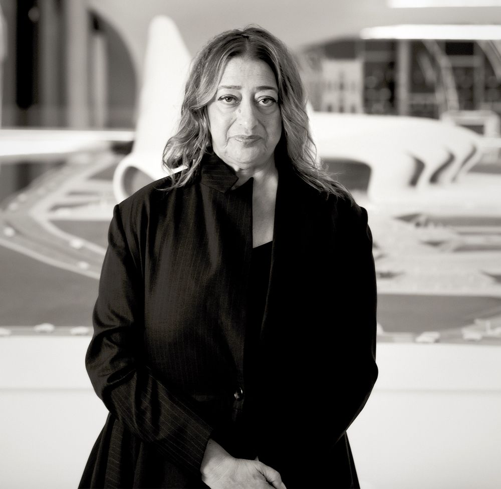

자하 모하마드 하디드
Zaha Mohammad Hadid
زُهاء محمد حديد
1950.10.31 ~ 2016.03.01
이라크 바그다드 출생인 자하 하디드는 영국 런던의 명문인 건축협회학교에서 건축학을 공부한 뒤 스승인 세계적 건축가 렘 콜하스의 건축사무소에서 일을 하기 시작했고, 1980년 자신의 설계사무를 설립한 뒤, 아일랜드 수상관저, 파리 빌레트 공원, 홍콩 피크단지 등을 통해 이름을 알리기 시작했습니다.

막힘·경계 없는 디자인
건축에서부터 가구, 작은 스푼 디자인까지 장르를 가리지않고, 재료의 고정관념을 깨며 유기적인 움직을 다양한 제품에 담아왔다.
현대건축에 최적화된 발상
"현대사회는 가만히 멈춰 있지않는다. 끊임없이 변화한다."공간적인 정돈과 배열은 삶의 패턴에 맞춰 진화한다."하고 말한 자하하디드는 건축물의 이동과 해체, 복원을 가능하게 한 모바일 건축의 선구자중 한명이다.
추상적, 유동적
자하하디드의 디자인은 곡선 형태를 띄어 추상적이고 유동적인 느낌을 낸다. 건축물은 보통 딱딱한 모서리, 차가운 벽 등의 고정관념을 깼다.